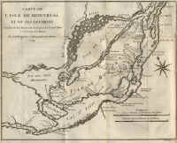

Context
1700–1800
The 18th century
Pierre Choret leaves Beauport for the island of Montreal; his sons marry two Lemay sisters at Sault-au-Récollet. In 1759 the Conquest makes the colony a British possession.
Show:
1700

Work
Robert Choret buys the seigneury of Pointe-aux-Bouleaux
Mathieu's eldest son; he dies at Ste-Croix on June 15, 1716.
Nicole's text
On April 5, 1701, Robert buys the seigneury of Pointe-aux-Bouleaux, near Ste-Croix de Lotbinière, from the widow of Mathieu Amiot. He has to give up a quarter of it to Charles Amiot by a judgment of the Prévôté of Quebec on May 14, 1708, and sells the rest to Pierre-Noël Le Gardeur on August 21, 1714. original page
Robert dies on June 15, 1716, at Ste-Croix, at the age of 68. original page
Context
The Great Peace of Montreal
Nicole's text
On August 4, 1701, « the Great Peace of Montreal » was signed with the Five Iroquois Nations, a treaty that broke the Anglo-Iroquois coalition. The raids between English and French went on all the same. On May 15, 1702, the second intercolonial war began. In 1703 Philippe Rigaud de Vaudreuil became governor general, until 1725. The Sovereign Council became the Superior Council. In 1710 Michel Bégon de la Picardière became intendant of New France, until 1726. original page
Pierre Choret the youngerPierre Choret
Sources: 3rd generation — Pierre — vie · 3rd generation — Pierre — enfance
Context
Gédéon de Catalogne's map shows Mathieu's land
We do not know exactly where Pierre the younger and Marie-Anne lived, but all their children were baptized in Beauport.
![Here is part of the map drawn up in 1709 by Gédéon de Catalogne for the government. At the top, in the right-hand corner, you can see the land of the ancestor Mathieu, near the River. But on the left of the map you can see two other lots belonging to Chorets. Can we say that these are the places occupied by Pierre le cadet and the descendants of his two twin brothers, who died in 1701? We would need to find documents to establish it. Right in the centre of the map is the Trait-Carré of Charlesbourg. The one farther north is Bourg-Royal; you can see Chorets settled on each side. Was this originally the land granted to Mathieu by the Jesuits, whose northern part went to one of his sons, and whose centre was sold to build Bourg-Royal? Many questions, and few answers without further research. What nevertheless inclines me to think my hypothesis is plausible is that, in Quebec City's plan to standardize its street names after the municipal mergers of 2000, it was suggested that a street located roughly where the Choret land at the top left lies be named "Mathieu Choret". So far this plan has not yet been carried out. To finish our tour of the map, you will find, marked with an arrow, the Turcot land. One of Pierre le cadet's sons, Pierre, would marry Angélique Turcot of Charlesbourg in 1712. So we can see where she lived shortly before her marriage. This couple would move to Montreal a few years later. Also on the map, alongside the Trait-Carré of Charlesbourg, outlined in a red rectangle, is the Pageot land. It belonged to the ancestor of another line, Thomas Pageau, whose descendants would nearly all live in Charlesbourg, down to Marie-Georgianna Pageau, who would be born there but moved to Montreal in the early 20th century.](../charettegen1/images/catalogne_small.jpg)
Nicole's text
We know for certain that Pierre and Marie-Anne spent their whole lives in Beauport, since all their children were baptized there. But we do not know exactly where they lived. We know that three of Mathieu Choret's seven children stayed in Beauport: the twins and Pierre le cadet. Which of them took over the family land? Or was the land big enough to be divided among them, allowing each to support his family on it? Which of the sons kept their mother Sébastienne until her death in 1698? original page
Sources: 2nd generation — Pierre le Cadet (the younger) — famille · ZoneCharette — home page — terre
1710
Marriage
Pierre Choret marries Angélique Turcot in Charlesbourg
In the first church of Saint-Charles-Borromée. Angélique, daughter of Jean Turcot and Marie Rose, was born on September 6, 1691.

Nicole's text
On February 1, 1712, Pierre Choret married Angélique Turcot in the parish of Saint-Charles-Borromée in Charlesbourg. original page
Jean Turcot and Marie Rose had several children, including our ancestor Angélique, born on September 6, 1691. They settled on a lot in the Trait-Carré of Charlesbourg. Jean seems to have been an important man, since influential people attended the baptism of his daughter Angélique: her godfather was the captain of the guards of the Comte de Frontenac, and her godmother was the wife of Monsieur de Villeray, first councillor of the Sovereign Council. original page
Source: 3rd generation — Pierre — vie
Home
Pierre Choret leaves the Quebec City area for the Montreal area
He settles on the "Coste St-Michel"; he is the first of Pierre the younger's children to move to Montreal.
Nicole's text
Around 1717 Pierre made a big decision: to leave the Quebec City region for the Montreal region. We don't know his reasons, but they were probably economic. Montreal had become the economic centre of Canada, and its rapid growth drew young people. This move was quite an expedition: more than 250 kilometres, no road fit for carts, young children and, surely, the household goods essential for setting the family up in its new home. Did they travel by river? Very probably; the St. Lawrence River was still, at the time, the main route, as it had been since the beginnings of the colony. original page
Pierre settled his family in the "Coste St-Michel". The parish of Notre-Dame kept the registers for the whole island. The baptisms of two children were recorded there, in 1718 and 1719. The baptisms of the following children are found in the registers of the parish of St-Laurent, which opened in 1720, and the last one in the registers of the parish of Sault-au-Récollet, which opened in 1736. There is one exception: three children were baptized, from 1725 to 1728, in the parish of Notre-Dame. According to the children's baptism records, Pierre and Angélique lived in the Coste St-Michel, which was eventually attached to the parish of Sault-au-Récollet. Their neighbours and friends were Ignace Lemay and Anne Lecompte, two of whose daughters would marry the two Choret sons. Several Turcots also lived in the Coste St-Michel, including three of Angélique's brothers, Jean, Louis-Gabriel and Pierre, as well as their father. original page
Pierre was the first of the children of Pierre le Cadet to move to Montreal, but three of his younger brothers, Ignace, Michel and Jean-Baptiste, and a sister, Marie-Joseph, would follow him, and even marry there. There is an ordinance of October 7, 1726, about the seizure of a canoe full of beaver pelts, and a fine handed to the offender, by Choret brothers working as guards for the Compagnie des Indes (Company of the Indies). Clearly, for the young men of the time, the future lay to the West. Even the government believed it, since it sent La Vérendrye on expeditions ever farther west; he would stop at the foot of the Rockies. original page
Sources: 3rd generation — Pierre — vie · 3rd generation — Pierre
Birth
Joseph Choret is born in Montreal
Sources differ
- born September 25, 1719 — 4th generation — Pierre and Marie Lemay, 4th generation — Pierre and Marie Lemay — descendance
- September 26, 1719 — 4th generation — Pierre and Marie Lemay — vie, 3rd generation — Pierre — descendance
Nicole's text
JOSEPH was baptized in Montreal on September 26, 1719. His godparents were François Poirier and Marie-Joseph Fayer. He married Marie-Anne Lemay on January 8, 1742, in Sault-au-Récollet; she was the daughter of Ignace and Marie-Anne Lecompte dit la Gimaudière. He died on August 29, 1792, in Sault-au-Récollet. original page
Sources: 4th generation — Pierre and Marie Lemay · 4th generation — Pierre and Marie Lemay — descendance · 3rd generation — Pierre — descendance
1730
Context
The Chemin du Roy opens between Quebec and Montreal
Nicole's text
In 1735, from Quebec to Montreal, on the north shore of the St. Lawrence, the Chemin du Roy (King's Road) was opened (unpaved, of course), a four-year project including 13 bridges. From then on, you could travel from one town to the other with a single horse, in four days original page
Sources: 3rd generation — Pierre — vie · 4th generation — Pierre and Marie Lemay — vie
Marriage
François Sanfaçon dit Consigny marries at Notre-Dame de Québec
Son of Jacques Sanfaçon dit Consigny and Jeanne Bijolet, born in France (diocese of Langres); he is said to have been a soldier.
Sources differ
- Marie-Louise Ducharme (tree) — At the Consignys' — arbre_genealogique
- Marie-Anne Ducharme (text below the tree) — At the Consignys' — arbre_genealogique
The bride's first name.
Nicole's text
The son of Jacques Sanfaçon dit Consigny and Jeanne Bijolet, born in France in the diocese of Langres, François married Marie-Anne Ducharme at Notre-Dame de Québec on November 21, 1735. original page
François Sanfaçon dit Consigny is said to have been a soldier. The Consignys lived down the river, in St-Jean-Port-Joli, Rivière-Ouelle and St-Pascal, then in Quebec City and Montreal. original page
Death
Pierre the younger dies in Beauport
With him passes the last of the first generation of Chorets born in New France.
Nicole's text
Pierre died on May 5, 1736, in Beauport; the burial record was signed by Pierre Grenier. He was 74, and with him passed the last member of the first generation of Chorets born in New France. Nearly ninety years had gone by since his parents settled there in 1647 original page
Pierre Choret the youngerPierre Choret
Sources: 2nd generation — Pierre le Cadet (the younger) — famille · 3rd generation — Pierre — vie
1740
Marriage
Pierre and Joseph Choret marry two Lemay sisters on the same day
At Sault-au-Récollet: Joseph marries Marie-Anne Lemay and Pierre marries Marie Lemay, daughters of Ignace Lemay.
Nicole's text
In 1742, the two sons of Pierre who reached adulthood, Pierre and Joseph, married two Lemay sisters on the same day, in Sault-au-Récollet, original page
Pierre Choret married Angélique Turcot in Charlesbourg on February 1, 1712. Only two of their sons reached adulthood, Pierre and Joseph. The Choret brothers married Lemay sisters. original page
Sources: 3rd generation — Pierre — vie · 4th generation — Pierre and Marie Lemay · 4th generation — Pierre and Marie Lemay — descendance
Death
Marie-Anne Beaugis dies in Beauport
Nicole's text
Marie-Anne died on January 23, 1748, in Beauport, at the age of 83; she was surely living with one of her sons or daughters who had stayed in Beauport. original page
Sources: 2nd generation — Pierre le Cadet (the younger) — famille · 3rd generation — Pierre — vie
Birth
Jean-Baptiste Chauret is born at Sault-au-Récollet
Sources differ
- March 23, 1749 — 5th generation — Jean-Baptiste — vie, 4th generation — Pierre and Marie Lemay — descendance
- May 10 (timeline) — 5th generation — Jean-Baptiste — cle1


Nicole's text
On March 23, 1749, Jean-Baptiste is born in the Sault-au-Récollet, as his father was before him. It was his grandfather, Pierre, who had left the Quebec area to come and settle on the island of Montréal. original page
Jean-Baptiste ChauretJoseph Choret
Sources: 5th generation — Jean-Baptiste — vie · 4th generation — Pierre and Marie Lemay — descendance · 5th generation — Jean-Baptiste — cle1
Death
Pierre Choret dies at Sault-au-Récollet
He is 59 and has seen his first grandchildren born. His widow Angélique remarries in 1750, to Jacques Messier.
Nicole's text
Pierre saw his first grandchildren born before he died on July 22, 1749, in Sault-au-Récollet, at the age of 59. His widow Angélique remarried on October 5, 1750, to Jacques Messier, in Sault-au-Récollet. He died there on February 10, 1764. We do not yet know when Angélique died. original page
Source: 3rd generation — Pierre — vie
1750
War
The Conquest: New France becomes British
Jean-Baptiste spends his early years in New France; in 1759 everything changes. The Royal Proclamation is read in Quebec on August 10, 1764.
Nicole's text
Jean-Baptiste spends the first years of his life in New France, but in 1759 everything changes... to find out more >>> original page
On August 10, 1764, on the Place d'Armes in Quebec, before the troops under arms and a large crowd, the Royal Proclamation is read. It is the first English constitution given to the colony, which is now called the "Province of Quebec". So begins the British régime... to find out more >>> original page
Jean-Baptiste ChauretJoseph Choret
Source: 5th generation — Jean-Baptiste
1770
Marriage
Jean-Baptiste Chauret marries Marie-Joseph Lorain
At Rivière-des-Prairies (the 1771–1774 registers are missing; the marriage contract of October 12 survives). Eleven children will be born, at least five of whom reach adulthood.
Nicole's text
On October 13, 1774, Jean-Baptiste marries Marie-Joseph Lorain, daughter of Paul and Marie-Joseph Rangé, at Rivière-des-Prairies. The registers of the parish of Rivière-des-Prairies are missing for the years 1771 to 1774, so we cannot trace their marriage record. original page
Eleven children are born of this marriage, at least five of whom reach adulthood. The family spends most of its life in the Sault-au-Récollet, where all the children are baptized except the last, born in 1796. By then the couple had moved to the parish of Saint-Laurent, where Jean-Baptiste dies on June 11, 1798. His wife, Marie Lorain, dies there in turn on April 22, 1807. Her sons Jacques and Basile are witnesses at her burial on April 24. original page
The registers of Rivière-des-Prairies parish for the years 1771 to 1774 are missing. We do, however, have the marriage contract drawn up before notaire Jean-Marie Chatellier on October 12, 1774. original page
Sources: 5th generation — Jean-Baptiste — vie · 4th generation — Pierre and Marie Lemay
Marriage
1780
Birth
Jacques Chauret (Charette) is born at Sault-au-Récollet
Baptized Louis, he goes by the name Jacques. That year his grandfather Joseph owns a farm on the Côte de la Visitation.
Sources differ
Nicole's text
Jacques was born on April 2, 1781, at Sault-au-Récollet, like his father Jean-Baptiste and his grandfather Joseph. His great-grandfather Pierre had left the Québec City area to settle there at the beginning of the century. (N.B. he was baptized under the name Louis, but the records found to date strongly suggest that this is indeed Jacques, our ancestor.) original page
JACQUES, born on April 2, 1781, in the Sault-au-Récollet. The baptismal record is in the name of Louis, but he goes by the name Jacques. His godparents are Louis Chauret and Marie-Louise Lorrain, the child's uncle and aunt. Jacques marries Marie-Amable-Marguerite Varin dite La Pistole, daughter of Louis, a cooper, and Catherine Guilbault, on February 26, 1810, at Saint-Laurent de Montréal. The groom's witnesses are Jean-Baptiste and Louis Chauret, Jacques's brothers. The marriage contract was signed on February 19, 1810, before the notaire (notary) Barron. He dies on August 5, 1896, and is buried on August 7 in Montréal. He is 88 1/2; his death record gives ten years more. original page
We know that in 1743 his father, Joseph, lives on the Côte St-Michel and that in 1781 he owns a farm of 3 by 20 arpents, all cleared, with a house, barn and stable on the Côte de LaVisitation and, on the Côte St-Michel, a wooded lot of 5 by 20 arpents. Life in the colony during Jean-Baptiste's early childhood is not easy. One example of a time of hardship: the summer and fall of 1757, with poor harvests, the ships carrying supplies and coin from France seized by the English, famine, and epidemics of typhus and smallpox. The following winter, for lack of food, horse meat is eaten for the first time in the colony. original page
Jacques Charette (1781)Jean-Baptiste Chauret
Sources: 6th generation — Jacques — vie · 5th generation — Jean-Baptiste — descendance · 6th generation — Jacques — cle1
1790
Death
Joseph Choret dies at Sault-au-Récollet
Sources differ
- August 29, 1792, buried the 30th — 4th generation — Pierre and Marie Lemay, 4th generation — Pierre and Marie Lemay — descendance
- August 30, 1793 (according to Brother Benoît, quoted) — 4th generation — Pierre and Marie Lemay
Nicole's text
Joseph Choret Born September 25, 1719, in Notre-Dame de Montréal. Married January 8, 1742, in Sault-au-Récollet to Marie-Anne Lemay Died August 29, 1792, in Sault-au-Récollet, and buried August 30. original page
Sources: 4th generation — Pierre and Marie Lemay · 4th generation — Pierre and Marie Lemay — descendance
Death
Jean-Baptiste Chauret dies
Nicole's text
Jean Baptiste Choret Born March 23, 1749, at Sault-au-Récollet Married October 13, 1774, in Rivière des Prairies to Marie-Josephte Lorain, daughter of Paul and Marie-Joseph Rangé. Died June 13, 1798, in Saint-Laurent, Montréal. original page
Source: 4th generation — Pierre and Marie Lemay — descendance
Undated memories
Family
A kinship with Marguerite Bourgeoys
Through the marriage of Jean-Baptiste and Marie-Joseph Lorain: one of Marguerite Bourgeoys's nieces is among Marie-Joseph's ancestors.
Nicole's text
How is it possible to be related to Marguerite Bourgeoys? Quite simply through marriage, that of Jean-Baptiste Chauret and Marie-Joseph Lorain. Marie-Joseph's ancestors include one of the three nieces Marguerite brought with her to the colony in 1671. So all the couple's descendants inherit Aunt Marguerite. original page
The tree goes back to the parents of Marie and Marguerite Bourgeoys. Marie, the wife of Orson Sommillard, sends three of her daughters to Canada under the protection of their aunt Marguerite. Two of the three Sommillard sisters, Marguerite and Catherine, become nuns of the Congrégation de Notre-Dame like their aunt. On December 6, 1683, Marguerite dies in the fire at the sisters' house. Catherine dies in 1699 at the age of forty-three. As for Louise Sommillard, on July 9, 1674, in Montréal she marries François Fortin-Hermel, son of Marc and Françoise de Rues. original page
Sources: 5th generation — Jean-Baptiste — vie · 5th generation — Jean-Baptiste — marguerite